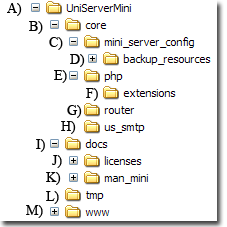

Additional Information
Introduction
This page contains additional information for the PHP MiniServer.
Folder structure
The PHP MiniServer folder structure is shown on the right.
- A) Contains the server utility phpMiniServer1.exe for running the server.
- C) Contains the server configuration file mini_config.ini
- D) Collection of files. These can be copied to appropriate location if delected.
- E) F) Contains PHP and extensions.
- G) This folder is a convenient location for all router scripts.
- H) Uniform Server mail client.
- I) Docs folder contain server documentation.
- K) This manual.
- L) Folder used by PHP for storing temporary data.
- M) Servers’ default root folder. For portability place your web scripts in this folder.
|

|
Supported Mime types
The following are the currently supported mime types for PHP 5.4.7
static php_cli_server_ext_mime_type_pair mime_type_map[] = {
{ "gif", "image/gif" },
{ "png", "image/png" },
{ "jpe", "image/jpeg" },
{ "jpg", "image/jpeg" },
{ "jpeg", "image/jpeg" },
{ "css", "text/css" },
{ "html", "text/html" },
{ "txt", "text/plain" },
{ "js", "text/javascript" },
{ "htm", "text/html" },
{ "svg", "image/svg+xml" },
{ NULL, NULL }
};
Configuration File
The PHP MiniServer uses the following file to save configuration data: C:\UniServerMini\core\mini_server_config\mini_config.ini
This file is split into three sections as shown:
[APP]
This section is reserved for the application and is not user changeable.
- AppNumber - Each server instance (multi-server) has an identification number.
- AppVersion - Controller version.
[USMINI]
With the exception of Host this section is changeable from the controller.
- phpIniName - PHP configurration to use when server starts.
- phpIniDefault - PHP configuration file assigned to default button
- Host - Server name default is localhost valid values are:
- localhost or 127.0.0.1 (local PC access only)
- 0.0.0.0 (Local, Intranet and Internet access)
|
mini_config.ini
[APP]
AppNumber=1
AppVersion=1.0.0
[USMINI]
phpIniName=php_production.ini
phpIniDefault=php_production.ini
Host=localhost
[PHPMINI]
Port=80
RootFolder=
RouterFile=
wwwDisplayPage=/
HideCommandWindow=true
|
[PHPMINI]
This section is changeable from the controller.
- Port - The standard server port is 80. For each server instance (multi-servers) this must be unique. Note: The standard secondary port is 8080
- RootFolder - If no value specified the default root-folder www is used. For portability this folder is automatically updated. A different folder can be selected this is not tracked and requires manually updating to new location if server is moved.
- RouterFile - Full path and name of a router script to use, if blank no script used. A router script is run on every request to the web server. For portability place all your scripts in folder C:\UniServerMini\core\router
- wwwDisplayPage - Assigns a page to the www button. The path is specified relative to the root-folder www e.g. “/index.php” A file selected from the controller is automatically converted to a relative path.
- HideCommandWindow - The PHP built-in server opens a command window displaying the server status and every request made to the server. For testing this provides invaluable information. The command window can be displayed or hidden by setting HideCommandWindow value to false or true respectively.
Index page support
The PHP built-in server currently supports two index pages index.php and index.html
These are searched in the following order index.php, index.html the first found is displayed other is ignored.
SSL Support
The PHP built-in web server is intended only for development over http. It does not support https (SSL encryption) however if you want SSL support consider using Stunnel.
Stunnel is an application that proxies insecure communications over a secure channel.
Although a little dated this Uniform Server Wiki article Stunnel Introduction explains in detail how to set-up and use Stunnel.
|